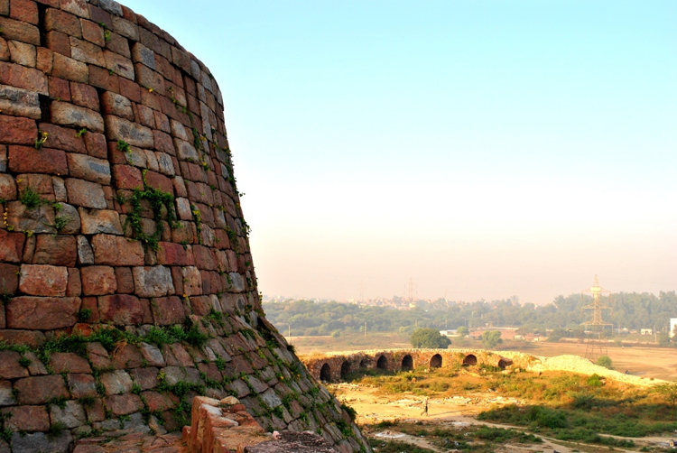
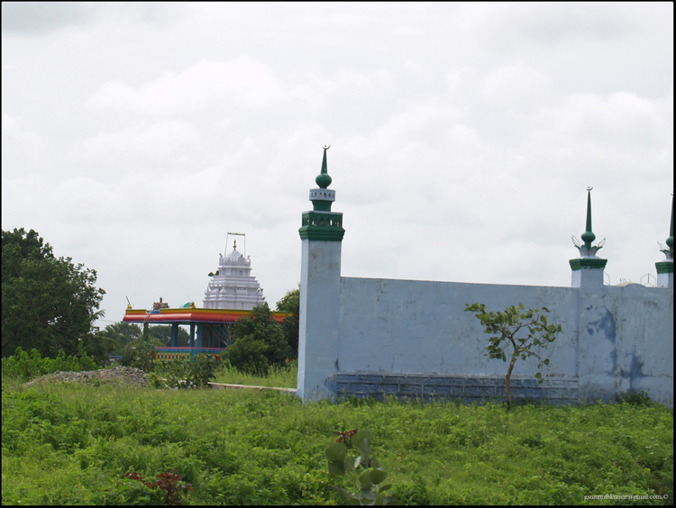
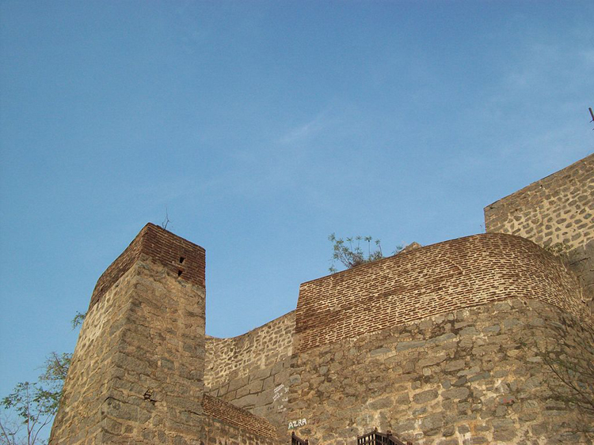
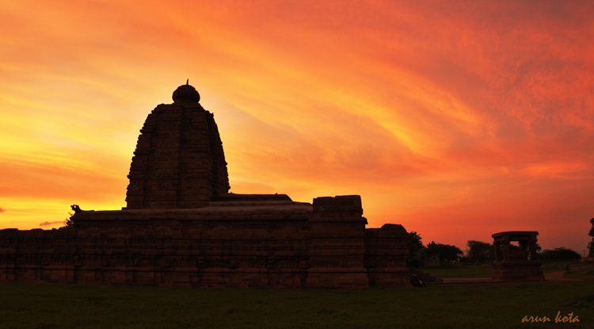
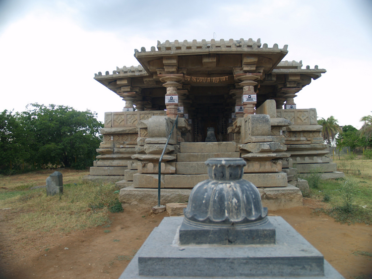
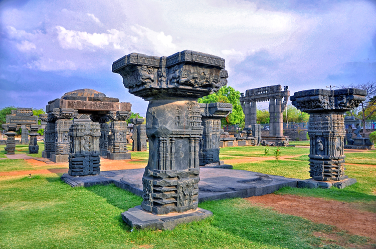

Top places to visit in Telangana
1.Adilabad
Adilabad is the second largest city in Telangana and is known for its handicrafts. The area is distinguished from the Karimnagar and Nizamabad districts by the River Godavari. The Kawal wildlife sanctuary is a home to wildlife species like the tiger, panther, crocodiles etc. The town is also known for its various waterfalls and parks. A great place to visit would be the Basar Saraswati Temple which is situated at the banks of the Godavari River.
2.Charminar
Hyderabad, the capital and the largest city of the State of Telangana and also the capital of the State of Andhra Pradesh till the next capital is determined. The place is rich with historic and urban structures. The city is also a home to the ‘Telugu Film Industry ‘or ‘Tollywood’, which is the second largest producer of motion pictures in India. Monuments like Charminar, marketplaces, cuisines, the town of Hyderabad is a must visit.
3.Karimnagar
Karimnagar is located by a tributary of the Godavari River and is located at an approximate distance of 165 kilometers. The city is famous for its various historical forts owing to it being under the Nizam’s reign. The Elgandal fort is a great place to visit due to its great location. The town is also famous for its various pilgrimage spots with some really amazing temples. The city is the 4th most populated city in the State of Telangana.
4.Khammam
The city’s name ‘Khammam’ owes to the local derivation of the name of hill located in this area. The Godavari River covers an area of 250 kilometers in this area from the Warangal district. This is also rich in coal minerals and called the ‘Coal Town of South India’. The town is famous for its lakes, forts, temples and hot springs. The Kinnerasani Wildlife Sanctuary is a great place to visit which houses animals like tigers, pythons, jackals etc.
5.Mahabubnagar
Located at a distance of around 100 kilometers from the capital Hyderabad, Mahbubnagar was the core of the Sathavahanas and the Chalukya Dynasties’ reign and was also a part of the Princely state of Hyderabad. The town is famous for various palaces and ancient temples. A major tourist attraction is the ‘Peerlamarri’ which is a 800 years old banyan tree and its underlings are spread across 3 acres of land.
6.Nizamabad temple
Nizamabad, a district in Telangana, is aptly known as a rich heritage site. It is a place where time tells stories of the glorious history of the Nizams who once ruled this place and where different communities and cultures co-exist in perfect harmony. Nizamabad is equally blessed by nature as well with beautiful lakes like Alisagar and Nizamsagar. Nizamabad is also known as Induru is a city in the Indian state of Telangana. Nizamabad is a major urban agglomeration and third largest city in the state. It is governed by municipal corporation and is the headquarters of the Nizamabad district.[3] Although previously part of Hyderabad State and then Andhra Pradesh state, Nizamabad became a part of the newly formed state of Telangana by the Andhra Pradesh Reorganisation Act, 2014.It is located about 186 kilometres (116 mi) north of the state capital, Hyderabad.
7.Warangal Fort
Another tourist attraction in Warangal that is worth visiting is the Warangal Fort. Built on a hillock Ekashila in 13th century, this fort is one of the architectural masterpieces of Kakatiya Dynasty. Constructed by King Ganapatideva and later by his daughter Rani Rudrama, Warangal Fort is symbolic of the historical opulence of the region during the reign of Kakatiya Kingdom. Located in south eastern side of Warangal city, it is a prominent landmark of the Telangana State, presenting a perfect example of architectural excellence and historical richness. Built in three layers of fortification ensuring absolute safety, Warangal Fort impresses every visitor with its imposing structure. Although now in ruins, the remains of the fort still present a glimpse of the mesmerizing craftsmanship and breathtaking artistry that can be seen in the motifs, sculptures, stone work, etc. Warangal fort has witnessed many battles; a few of its parts have been destroyed by various invaders too. A visit to Warangal fort is sure to leave you fascinated with the gracefulness of its architecture and brilliance that is ruins display now. The remains of the fort have been recognized as monument of national importance by the Archaeological survey of India.